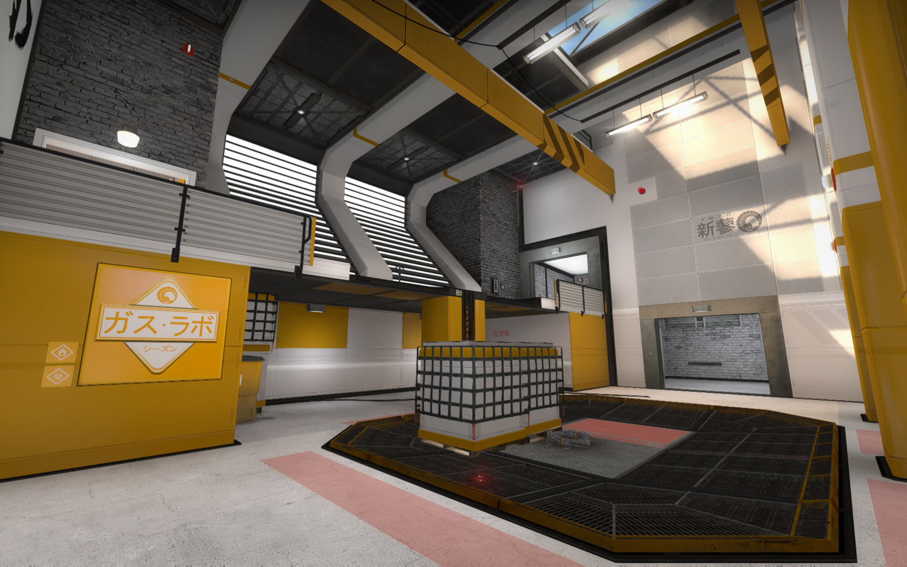
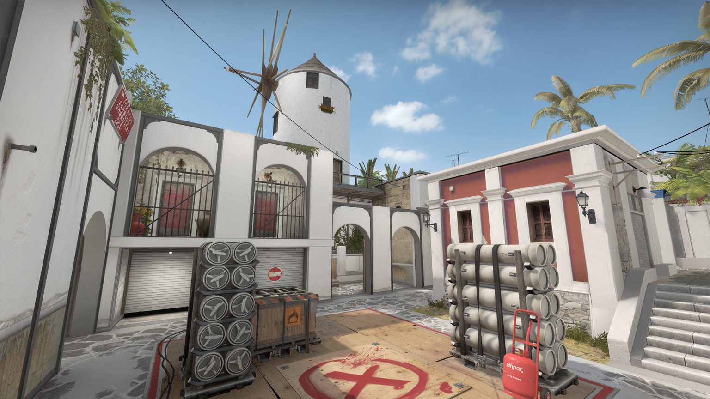

“Details matter,” Shawn says. “That paint bucket I added to a level might seem trivial, and of course in the grand scheme of things it is, but I focus on the details because I want people to feel a visceral sense of quality when they play something I worked on. They might not care about that paint bucket, but they can tell I did and they know the lengths I went through to make them happy.
“I think it’s important that areas tell stories. What kind of story is less important because to some extent it’s better that the players fill in a lot of the blanks, but thematic details are really fun and contribute to the enjoyment of playing a level for as many hours as we often do.

“I think it’s important that areas tell stories. What kind of story is less important because to some extent it’s better that the players fill in a lot of the blanks, but thematic details are really fun and contribute to the enjoyment of playing a level for as many hours as we often do.
“I’ve been creating levels since I was a little kid,” he says. “It’s something I’ve always wanted to do ever since the days of drawing Mega Man 2 levels on grid paper. I actually released my first level when I was about 16, for Day of Defeat: Source. I received a tremendous sense of accomplishment and achievement from playing something I created with other players, and ever since then I’ve been hooked. I worked on some levels for Natural Selection 2, and I’ve released five CS:GO levels. Even after five levels, mapping for CS:GO hasn’t stopped being interesting and challenging for me, there’s still so much to learn.”

“In terms of advice, it’s always the same: become a student of level design. Don’t merely play levels, walk around them and learn from every specific decision the level designer made. Every piece of geometry, every texture, every light, every dimension of every area, all these elements represent conscious decisions worth exploring, critiquing, and understanding. The best levels are full works of art where every creative decision was thoughtful and intelligent. Those sorts of levels inspire the hell out of me.”